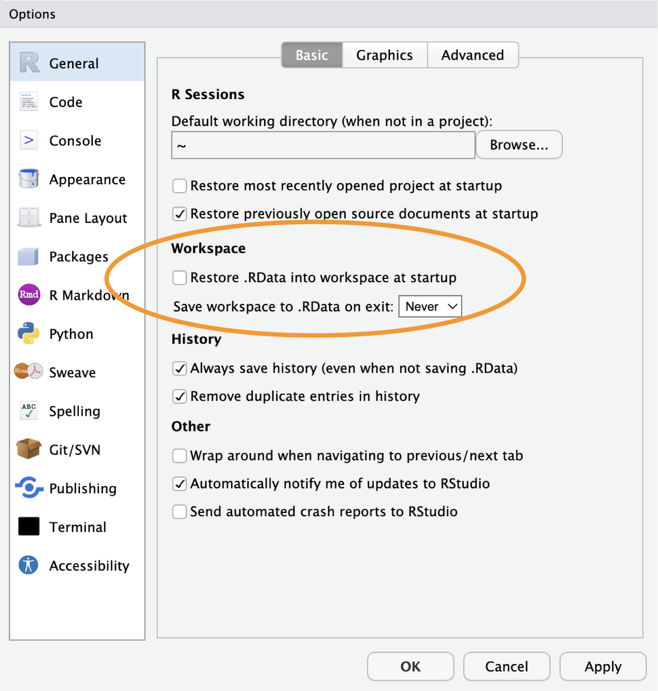
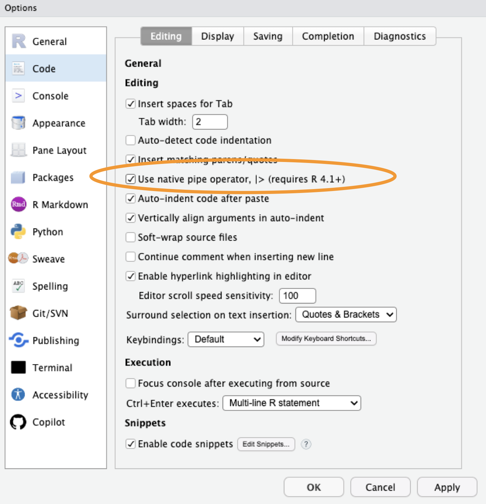
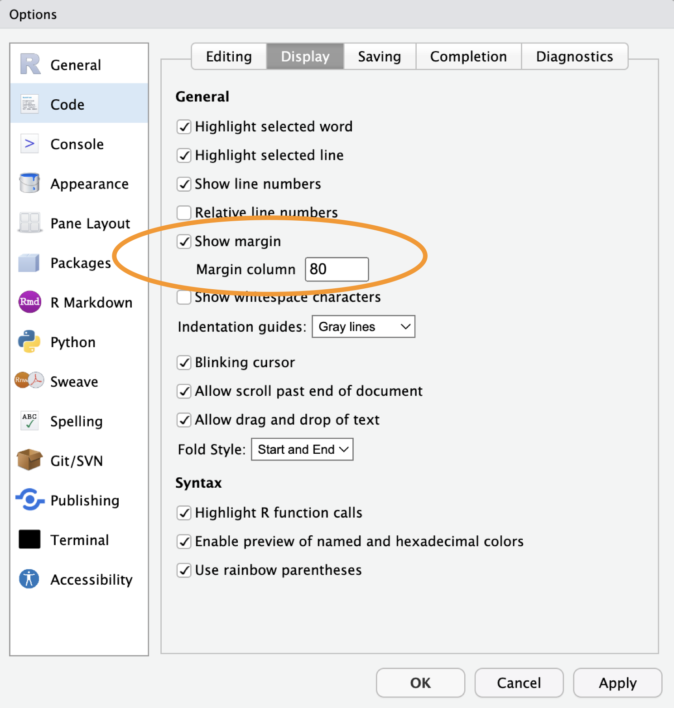
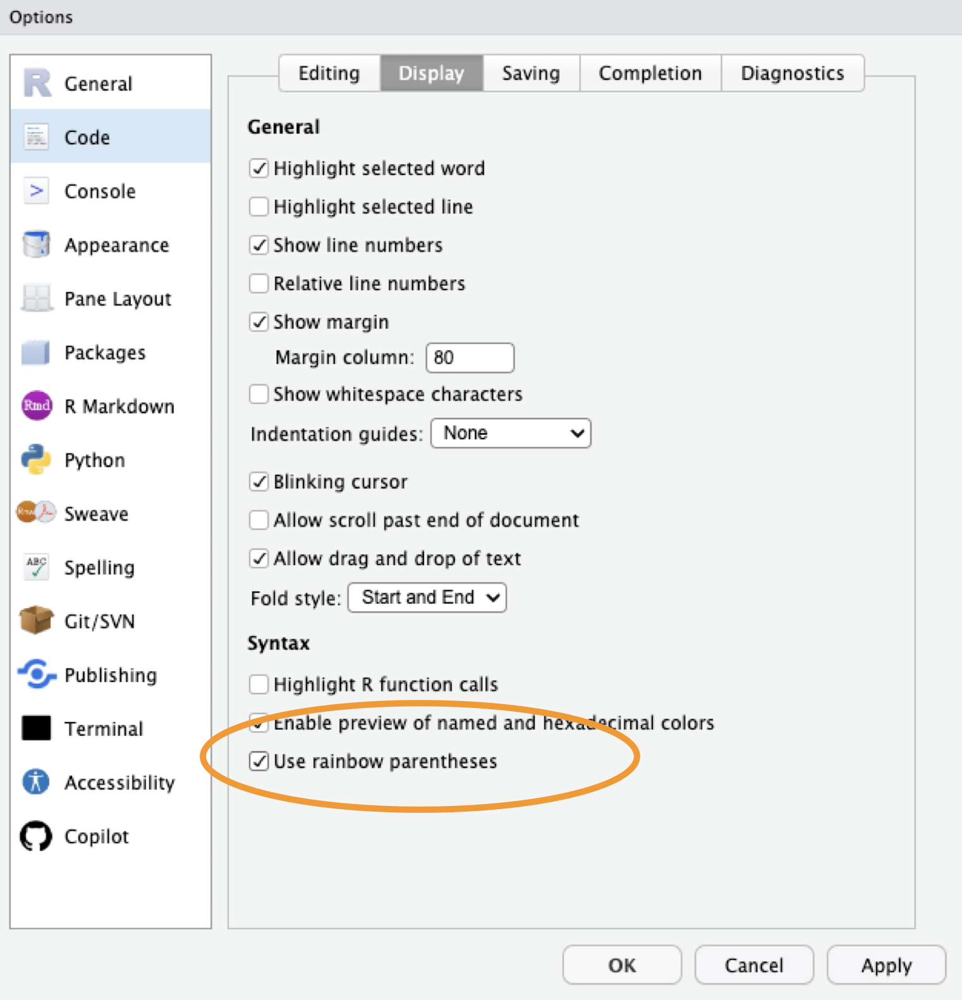
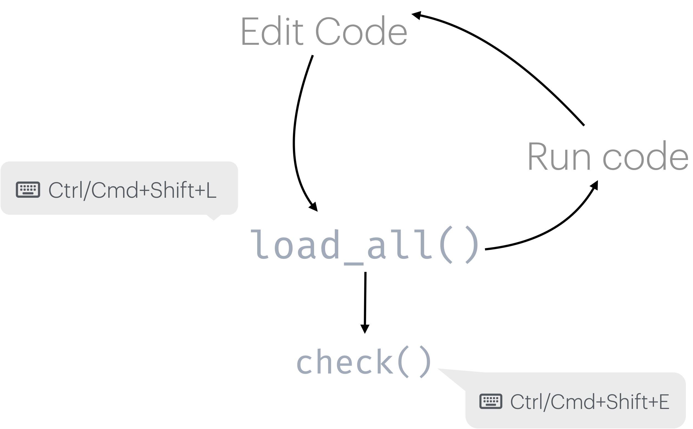
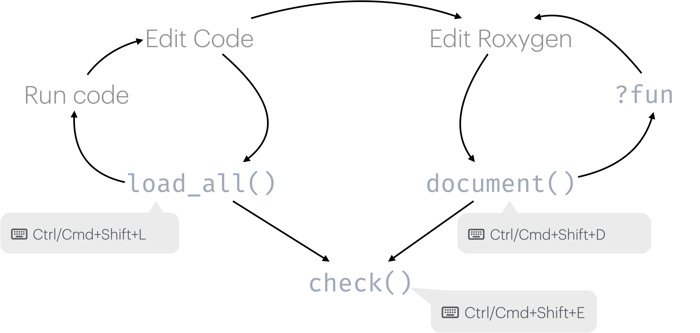

Package Development Fundamentals
Advanced R Package Development
Outline
- Why make a package?
- Lay the foundations
- Write your first function
- Documentation basics
- Common pain points
R Packages
Why make a package?
- Reuse your code across projects and share it with others
- Enforce a consistent interface around your work
- Bundle code with documentation and tests
- Distribute software in a reproducible way to:
- your team
- the world
Script vs Package
Script
- Copy-paste to reuse across projects and run with
sourceor select+run - Documentation in
#comments - Tested less frequently
- Functions mixed with analysis code
Package
- install once,
library()anywhere - Document in Roxygen comments to enable
?function - testthat test suite
- Functions only - clean separation
Package structure and state
Five forms
| Source | Directory of files with specific structure What you interact with as you build a package |
| Bundle | Compressed into a single file (.tar.gz) via devtools::build() -> R CMD buildVignettes built; files in .Rbuildignore left behind |
| Binary | Platform-specific compressed file (.tgz, .zip) Made with devtools::build(binary = TRUE) → R CMD INSTALL –build |
| Installed | Binary package decompressed into a user’s libraryinstall.packages() |
| In Memory | Loaded and ready for use in an R sessionlibrary() |
Package structure
Let’s make a package!
We will
- Create a simple fishy package
- Focus on workflows
We won’t
- Cover every aspect of R package development
fishr
Sneak peak of our end state on GitHub

Lay the Foundations
Configure RStudio
Tools > Global Options


Configure RStudio
Tools > Global Options


Tools
- R version >=
4.4.0(4.5 strongly recommended) - RStudio >=
2025.09(2026.01 recommended) - R package development toolchain
- Git
- GitHub account
Check required packages
Create your package
Opens a new RStudio project with the basic package skeleton:
R/- directory for your functionsDESCRIPTION- package metadataNAMESPACE- exports (managed automatically)
Use devtools automatically
Adds library(devtools) to your .Rprofile so it is always loaded during development.
Not a package dependency - only for your own workflow.
Note: devtools makes all of usethis available too.
Confirm git is configured
Initialize git and connect to GitHub
Write Your First Function
Create a function file
Creates R/cpue.R and opens it for editing.
Write the function
cpue calculates catch per unit effort.
Load and test interactively
Try your function in the new package
Run a full package check
Runs R CMD check - the same check CRAN runs.
Aim for 0 errors, 0 warnings, 0 notes.
Package development loop

Make a commit
Now that we have a basic working function, commit your changes.
Set a license
Adds LICENSE and LICENSE.md files and updates DESCRIPTION.
Other options: use_gpl3_license(), use_ccby_license(), use_apache_license()
DESCRIPTION file
Package: fishr
Title: Calculate standard catch metrics for fisheries
Version: 0.0.0.9000
Authors@R:
person("Jane", "Doe",
email = "jane.doe@something.com",
role = c("aut", "cre"),
comment = c(ORCID = "XXXX-XXXX-XXXX-XXXX"))
Description: Provides functions for calculating and analyzing fisheries
catch data, such as Catch Per Unit Effort (CPUE), a fundamental metric in
fisheries science.
License: MIT + file LICENSE
Encoding: UTF-8
Roxygen: list(markdown = TRUE)
RoxygenNote: 7.3.2Documentation
Add a roxygen block
Insert a template with Ctrl+Alt+Shift+R or Cmd+Option+Shift+R
Generate documentation
Your Turn
Exercise
- Fill in the
TitleandDescriptionfields inDESCRIPTION - Populate roxygen tags
@param,@return, and@examples - Run
document()and verify?cpueworks - Run
check()and resolve any warnings
Solution
#' Calculate Catch Per Unit Effort (CPUE)
#'
#' Calculates CPUE from catch and effort data, with optional gear standardization.
#'
#' @param catch Numeric vector of catch (e.g., kg)
#' @param effort Numeric vector of effort (e.g., hours)
#' @param gear_factor Numeric adjustment for gear standardization (default is 1)
#'
#' @return A numeric vector of CPUE values
#' @export
#'
#' @examples
#' cpue(100, 10)
#' cpue(100, 10, gear_factor = 0.5)
cpue <- function(catch, effort, gear_factor = 1) {
...
}Package development workflow (Again)

NAMESPACE
Controls what your package exports and what it imports from other packages.
- Managed automatically by roxygen2 - never edit by hand
- Use
@exportto export a function - Use
@importFrom pkg funto import from another package
Package-level documentation
README
Creates README.Rmd. Edit it, then render to README.md:
README.md is what GitHub displays on your repository page.
Make a commit
Commit all new changes to the DESCRIPTION file, documentation and the license.
Common Pain Points
load_all() vs install()
load_all(): during active development - fast, doesn’t install. Use this when working inside your package project.install(): when you want to test as a “real” package, outside your package project.
Managing dependencies
- Which functions need
@importFrom? - When to use
package::function()vs importing? - Dependencies in
NAMESPACEvsDESCRIPTION
Rule of thumb: use package::function() in your code, declare the package under Imports in DESCRIPTION with use_package("pkg").
Documentation drift
- Keeping roxygen comments in sync with code
- Updating examples when function signatures change
Run document() regularly - it is fast and keeps man/ files current. check() will catch documentation that does not match the code.
Understanding check() output
- Errors: must fix before releasing
- Warnings: should fix before releasing
- Notes: review carefully - some are informational
Run check() early and often. It is much easier to fix one new problem than ten accumulated ones.